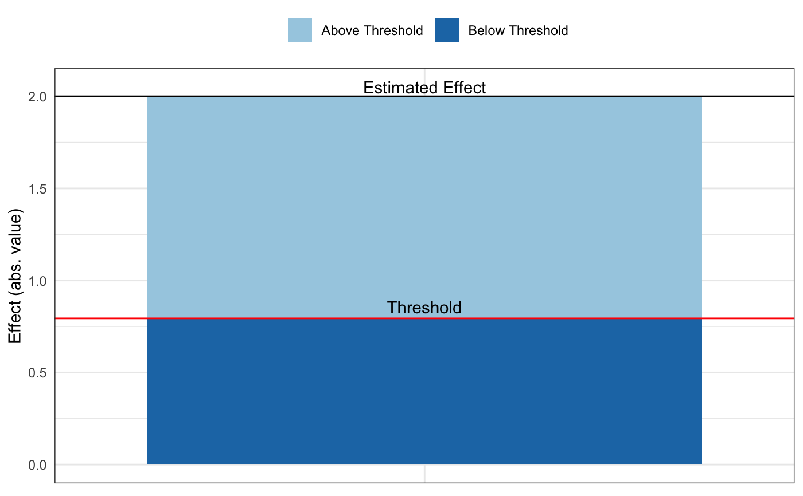
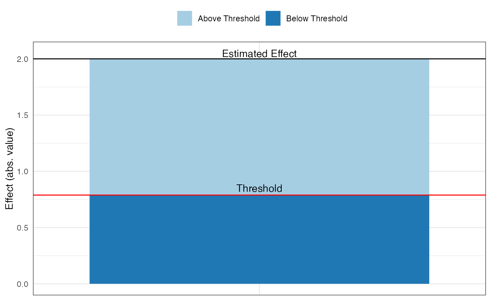

For published studies, this command calculates (1) how much bias there must be in an estimate to invalidate/sustain an inference; (2) the impact of an omitted variable necessary to invalidate/sustain an inference for a regression coefficient.
Usage
pkonfound(
est_eff,
std_err,
n_obs,
n_covariates = 1,
alpha = 0.05,
tails = 2,
index = "RIR",
nu = 0,
n_treat = NULL,
switch_trm = TRUE,
model_type = "ols",
a = NULL,
b = NULL,
c = NULL,
d = NULL,
two_by_two_table = NULL,
test = "fisher",
replace = "control",
sdx = NA,
sdy = NA,
R2 = NA,
far_bound = 0,
eff_thr = NA,
FR2max = 0,
FR2max_multiplier = 1.3,
to_return = "print"
)Arguments
- est_eff
the estimated effect (such as an unstandardized beta coefficient or a group mean difference)
- std_err
the standard error of the estimate of the unstandardized regression coefficient
- n_obs
the number of observations in the sample
- n_covariates
the number of covariates in the regression model
- alpha
probability of rejecting the null hypothesis (defaults to 0.05)
- tails
integer whether hypothesis testing is one-tailed (1) or two-tailed (2; defaults to 2)
- index
whether output is RIR or IT (impact threshold); defaults to "RIR"
- nu
what hypothesis to be tested; defaults to testing whether est_eff is significantly different from 0
- n_treat
the number of cases associated with the treatment condition; applicable only when model_type = "logistic"
- switch_trm
whether to switch the treatment and control cases; defaults to FALSE; applicable only when model_type = "logistic"
- model_type
the type of model being estimated; defaults to "ols" for a linear regression model; the other option is "logistic"
- a
cell is the number of cases in the control group showing unsuccessful results
- b
cell is the number of cases in the control group showing successful results
- c
cell is the number of cases in the treatment group showing unsuccessful results
- d
cell is the number of cases in the treatment group showing successful results
- two_by_two_table
table that is a matrix or can be coerced to one (data.frame, tibble, tribble) from which the a, b, c, and d arguments can be extracted
- test
whether using Fisher's Exact Test or A chi-square test; defaults to Fisher's Exact Test
- replace
whether using entire sample or the control group to calculate the base rate; default is control
- sdx
the standard deviation of X
- sdy
the standard deviation of Y
- R2
the unadjusted, original R2 in the observed function
- far_bound
whether the estimated effect is moved to the boundary closer (default 0) or further away (1);
- eff_thr
for RIR: unstandardized coefficient threshold to change an inference; for IT: correlation defining the threshold for inference
- FR2max
the largest R2, or R2max, in the final model with unobserved confounder
- FR2max_multiplier
the multiplier of R2 to get R2max, default is set to 1.3
- to_return
whether to return a data.frame (by specifying this argument to equal "raw_output" for use in other analyses) or a plot ("plot"); default is to print ("print") the output to the console; can specify a vector of output to return
Value
pkonfound prints the bias and the number of cases that would have to be replaced with cases for which there is no effect to nullify the inference. If to_return = "raw_output," a list will be given with the following components:
- obs_r
correlation between predictor of interest (X) and outcome (Y) in the sample data.
- act_r
correlation between predictor of interest (X) and outcome (Y) from the sample regression based on the t-ratio accounting for non-zero null hypothesis.
- critical_r
critical correlation value at which the inference would be nullified (e.g., associated with p=.05).
- r_final
final correlation value given CV. Should be equal to critical_r.
- rxcv
correlation between predictor of interest (X) and CV necessary to nullify the inference for smallest impact.
- rycv
correlation between outcome (Y) and CV necessary to nullify the inference for smallest impact.
- rxcvGz
correlation between predictor of interest and CV necessary to nullify the inference for smallest impact conditioning on all observed covariates (given z).
- rycvGz
correlation between outcome and CV necessary to nullify the inference for smallest impact conditioning on all observed covariates (given z).
- itcvGz
ITCV conditioning on the observed covariates.
- itcv
Unconditional ITCV.
- r2xz
R2 using all observed covariates to explain the predictor of interest (X).
- r2yz
R2 using all observed covariates to explain the outcome (Y).
- delta_star
delta calculated using Oster's unrestricted estimator.
- delta_star_restricted
delta calculated using Oster's restricted estimator.
- delta_exact
correlation-based delta.
- delta_pctbias
percent of bias when comparing delta_star with delta_exact.
- cor_oster
correlation matrix implied by delta_star.
- cor_exact
correlation matrix implied by delta_exact.
- beta_threshold
threshold value for estimated effect.
- beta_threshold_verify
estimated effect given RIR. Should be equal to beta_threshold.
- perc_bias_to_change
percent bias to change the inference.
- RIR_primary
Robustness of Inference to Replacement (RIR).
- RIR_supplemental
RIR for an extra row or column that is needed to nullify the inference.
- RIR_perc
RIR as % of total sample (for linear regression) or as % of data points in the cell where replacement takes place (for logistic and 2 by 2 table).
- fragility_primary
Fragility. the number of switches (e.g., treatment success to treatment failure) to nullify the inference.
- fragility_supplemental
Fragility for an extra row or column that is needed to nullify the inference.
- starting_table
Observed 2 by 2 table before replacement and switching. Implied table for logistic regression.
- final_table
The 2 by 2 table after replacement and switching.
- user_SE
user entered standard error. Only applicable for logistic regression.
- needtworows
whether double row switches are needed.
- analysis_SE
the standard error used to generate a plausible 2 by 2 table. Only applicable for logistic regression.
- Fig_ITCV
figure for ITCV.
- Fig_RIR
figure for RIR.
Examples
# using pkonfound for linear models
pkonfound(2, .4, 100, 3)
#> Robustness of Inference to Replacement (RIR):
#> RIR = 60
#>
#> To invalidate the inference of an effect using the threshold of 0.794 for
#> statistical significance (with null hypothesis = 0 and alpha = 0.05), 60.295%
#> of the (2) estimate would have to be due to bias. This implies that to
#> invalidate the inference one would expect to have to replace 60 (60.295%)
#> observations with data points for which the effect is 0 (RIR = 60).
#>
#> See Frank et al. (2013) for a description of the method.
#>
#> Citation: Frank, K.A., Maroulis, S., Duong, M., and Kelcey, B. (2013).
#> What would it take to change an inference?
#> Using Rubin's causal model to interpret the robustness of causal inferences.
#> Education, Evaluation and Policy Analysis, 35 437-460.
#>
#> Accuracy of results increases with the number of decimals reported.
#>
#> For other forms of output, run
#> ?pkonfound and inspect the to_return argument
#> For models fit in R, consider use of konfound().
pkonfound(-2.2, .65, 200, 3)
#> Robustness of Inference to Replacement (RIR):
#> RIR = 83
#>
#> To invalidate the inference of an effect using the threshold of -1.282 for
#> statistical significance (with null hypothesis = 0 and alpha = 0.05), 41.73%
#> of the (-2.2) estimate would have to be due to bias. This implies that to
#> invalidate the inference one would expect to have to replace 83 (41.73%)
#> observations with data points for which the effect is 0 (RIR = 83).
#>
#> See Frank et al. (2013) for a description of the method.
#>
#> Citation: Frank, K.A., Maroulis, S., Duong, M., and Kelcey, B. (2013).
#> What would it take to change an inference?
#> Using Rubin's causal model to interpret the robustness of causal inferences.
#> Education, Evaluation and Policy Analysis, 35 437-460.
#>
#> Accuracy of results increases with the number of decimals reported.
#>
#> For other forms of output, run
#> ?pkonfound and inspect the to_return argument
#> For models fit in R, consider use of konfound().
pkonfound(.5, 3, 200, 3)
#> Robustness of Inference to Replacement (RIR):
#> RIR = 183
#>
#> The estimated effect is 0.5. The threshold value for statistical significance
#> is 5.917 (with null hypothesis = 0 and alpha = 0.05). To reach that threshold,
#> 91.549% of the (0.5) estimate would have to be due to bias. This implies to sustain
#> an inference one would expect to have to replace 183 (91.549%) observations with
#> effect of 0 with data points with effect of 5.917 (RIR = 183).
#>
#> See Frank et al. (2013) for a description of the method.
#>
#> Citation: Frank, K.A., Maroulis, S., Duong, M., and Kelcey, B. (2013).
#> What would it take to change an inference?
#> Using Rubin's causal model to interpret the robustness of causal inferences.
#> Education, Evaluation and Policy Analysis, 35 437-460.
#>
#> Accuracy of results increases with the number of decimals reported.
#>
#> For other forms of output, run
#> ?pkonfound and inspect the to_return argument
#> For models fit in R, consider use of konfound().
pkonfound(-0.2, 0.103, 20888, 3, n_treat = 17888, model_type = "logistic")
#> Robustness of Inference to Replacement (RIR):
#> RIR = 2
#> Fragility = 1
#>
#> The table implied by the parameter estimates and sample sizes you entered:
#> User-entered Table:
#> Fail Success Success_Rate
#> Control 2882 118 3.93%
#> Treatment 17308 580 3.24%
#> Total 20190 698 3.34%
#>
#> The reported log odds = -0.200, SE = 0.103, and p-value = 0.052.
#> Values in the table have been rounded to the nearest integer. This may cause
#> a small change to the estimated effect for the table.
#>
#> To sustain an inference that the effect is different from 0 (alpha = 0.050),
#> one would need to transfer 1 data points from treatment success to treatment failure (Fragility = 1).
#> This is equivalent to replacing 2 (0.345%) treatment success data points with data points
#> for which the probability of failure in the control group (96.067%) applies (RIR = 2).
#>
#> Note that RIR = Fragility/P(destination)
#>
#> The transfer of 1 data points yields the following table:
#> Transfer Table:
#> Fail Success Success_Rate
#> Control 2882 118 3.93%
#> Treatment 17309 579 3.24%
#> Total 20191 697 3.34%
#>
#> The log odds (estimated effect) = -0.202, SE = 0.103, p-value = 0.050.
#> This is based on t = estimated effect/standard error
#>
#> See Frank et al. (2021) for a description of the methods.
#>
#> *Frank, K. A., *Lin, Q., *Maroulis, S., *Mueller, A. S., Xu, R., Rosenberg, J. M., ... & Zhang, L. (2021).
#> Hypothetical case replacement can be used to quantify the robustness of trial results. Journal of Clinical
#> Epidemiology, 134, 150-159.
#> *authors are listed alphabetically.
#>
#> Accuracy of results increases with the number of decimals entered.
#>
#> For other forms of output, run
#> ?pkonfound and inspect the to_return argument
#> For models fit in R, consider use of konfound().
pkonfound(2, .4, 100, 3, to_return = "thresh_plot")

pkonfound(2, .4, 100, 3, to_return = "corr_plot")
# using pkonfound for a 2x2 table
pkonfound(a = 35, b = 17, c = 17, d = 38)
#> Robustness of Inference to Replacement (RIR):
#> RIR = 14
#> Fragility = 9
#>
#> This function calculates the number of data points that would have to be replaced with
#> zero effect data points (RIR) to invalidate the inference made about the association
#> between the rows and columns in a 2x2 table.
#> One can also interpret this as switches (Fragility) from one cell to another, such as from the
#> treatment success cell to the treatment failure cell.
#>
#> To invalidate the inference that the effect is different from 0 (alpha = 0.05),
#> one would need to transfer 9 data points from treatment success to treatment failure as shown,
#> from the User-entered Table to the Transfer Table (Fragility = 9).
#> This is equivalent to replacing 14 (36.842%) treatment success data points with data points
#> for which the probability of failure in the control group (67.308%) applies (RIR = 14).
#>
#> RIR = Fragility/P(destination)
#>
#> For the User-entered Table, the estimated odds ratio is 4.530, with p-value of 0.000:
#> User-entered Table:
#> Fail Success Success_Rate
#> Control 35 17 32.69%
#> Treatment 17 38 69.09%
#> Total 52 55 51.40%
#>
#> For the Transfer Table, the estimated odds ratio is 2.278, with p-value of 0.051:
#> Transfer Table:
#> Fail Success Success_Rate
#> Control 35 17 32.69%
#> Treatment 26 29 52.73%
#> Total 61 46 42.99%
#>
#> See Frank et al. (2021) for a description of the methods.
#>
#> *Frank, K. A., *Lin, Q., *Maroulis, S., *Mueller, A. S., Xu, R., Rosenberg, J. M., ... & Zhang, L. (2021).
#> Hypothetical case replacement can be used to quantify the robustness of trial results. Journal of Clinical
#> Epidemiology, 134, 150-159.
#> *authors are listed alphabetically.
#>
#> For other forms of output, run
#> ?pkonfound and inspect the to_return argument
#> For models fit in R, consider use of konfound().
pkonfound(a = 35, b = 17, c = 17, d = 38, alpha = 0.01)
#> Robustness of Inference to Replacement (RIR):
#> RIR = 9
#> Fragility = 6
#>
#> This function calculates the number of data points that would have to be replaced with
#> zero effect data points (RIR) to invalidate the inference made about the association
#> between the rows and columns in a 2x2 table.
#> One can also interpret this as switches (Fragility) from one cell to another, such as from the
#> treatment success cell to the treatment failure cell.
#>
#> To invalidate the inference that the effect is different from 0 (alpha = 0.01),
#> one would need to transfer 6 data points from treatment success to treatment failure as shown,
#> from the User-entered Table to the Transfer Table (Fragility = 6).
#> This is equivalent to replacing 9 (23.684%) treatment success data points with data points
#> for which the probability of failure in the control group (67.308%) applies (RIR = 9).
#>
#> RIR = Fragility/P(destination)
#>
#> For the User-entered Table, the estimated odds ratio is 4.530, with p-value of 0.000:
#> User-entered Table:
#> Fail Success Success_Rate
#> Control 35 17 32.69%
#> Treatment 17 38 69.09%
#> Total 52 55 51.40%
#>
#> For the Transfer Table, the estimated odds ratio is 2.835, with p-value of 0.011:
#> Transfer Table:
#> Fail Success Success_Rate
#> Control 35 17 32.69%
#> Treatment 23 32 58.18%
#> Total 58 49 45.79%
#>
#> See Frank et al. (2021) for a description of the methods.
#>
#> *Frank, K. A., *Lin, Q., *Maroulis, S., *Mueller, A. S., Xu, R., Rosenberg, J. M., ... & Zhang, L. (2021).
#> Hypothetical case replacement can be used to quantify the robustness of trial results. Journal of Clinical
#> Epidemiology, 134, 150-159.
#> *authors are listed alphabetically.
#>
#> For other forms of output, run
#> ?pkonfound and inspect the to_return argument
#> For models fit in R, consider use of konfound().
pkonfound(a = 35, b = 17, c = 17, d = 38, alpha = 0.01, switch_trm = FALSE)
#> Robustness of Inference to Replacement (RIR):
#> RIR = 19
#> Fragility = 6
#>
#> This function calculates the number of data points that would have to be replaced with
#> zero effect data points (RIR) to invalidate the inference made about the association
#> between the rows and columns in a 2x2 table.
#> One can also interpret this as switches (Fragility) from one cell to another, such as from the
#> treatment success cell to the treatment failure cell.
#>
#> To invalidate the inference that the effect is different from 0 (alpha = 0.01),
#> one would need to transfer 6 data points from control failure to control success as shown,
#> from the User-entered Table to the Transfer Table (Fragility = 6).
#> This is equivalent to replacing 19 (54.286%) control failure data points with data points
#> for which the probability of success in the control group (32.692%) applies (RIR = 19).
#>
#> RIR = Fragility/P(destination)
#>
#> For the User-entered Table, the estimated odds ratio is 4.530, with p-value of 0.000:
#> User-entered Table:
#> Fail Success Success_Rate
#> Control 35 17 32.69%
#> Treatment 17 38 69.09%
#> Total 52 55 51.40%
#>
#> For the Transfer Table, the estimated odds ratio is 2.790, with p-value of 0.012:
#> Transfer Table:
#> Fail Success Success_Rate
#> Control 29 23 44.23%
#> Treatment 17 38 69.09%
#> Total 46 61 57.01%
#>
#> See Frank et al. (2021) for a description of the methods.
#>
#> *Frank, K. A., *Lin, Q., *Maroulis, S., *Mueller, A. S., Xu, R., Rosenberg, J. M., ... & Zhang, L. (2021).
#> Hypothetical case replacement can be used to quantify the robustness of trial results. Journal of Clinical
#> Epidemiology, 134, 150-159.
#> *authors are listed alphabetically.
#>
#> For other forms of output, run
#> ?pkonfound and inspect the to_return argument
#> For models fit in R, consider use of konfound().
pkonfound(a = 35, b = 17, c = 17, d = 38, test = "chisq")
#> Robustness of Inference to Replacement (RIR):
#> RIR = 15
#> Fragility = 10
#>
#> This function calculates the number of data points that would have to be replaced with
#> zero effect data points (RIR) to invalidate the inference made about the association
#> between the rows and columns in a 2x2 table.
#> One can also interpret this as switches (Fragility) from one cell to another, such as from the
#> treatment success cell to the treatment failure cell.
#>
#> To invalidate the inference that the effect is different from 0 (alpha = 0.05),
#> one would need to transfer 10 data points from treatment success to treatment failure as shown,
#> from the User-entered Table to the Transfer Table (Fragility = 10).
#> This is equivalent to replacing 15 (39.474%) treatment success data points with data points
#> for which the probability of failure in the control group (67.308%) applies (RIR = 15).
#>
#> RIR = Fragility/P(destination)
#>
#> For the User-entered Table, the Pearson's chi square is 14.176, with p-value of 0.000:
#> User-entered Table:
#> Fail Success Success_Rate
#> Control 35 17 32.69%
#> Treatment 17 38 69.09%
#> Total 52 55 51.40%
#>
#> For the Transfer Table, the Pearson's chi square is 3.640, with p-value of 0.056:
#> Transfer Table:
#> Fail Success Success_Rate
#> Control 35 17 32.69%
#> Treatment 27 28 50.91%
#> Total 62 45 42.06%
#>
#> See Frank et al. (2021) for a description of the methods.
#>
#> *Frank, K. A., *Lin, Q., *Maroulis, S., *Mueller, A. S., Xu, R., Rosenberg, J. M., ... & Zhang, L. (2021).
#> Hypothetical case replacement can be used to quantify the robustness of trial results. Journal of Clinical
#> Epidemiology, 134, 150-159.
#> *authors are listed alphabetically.
#>
#> For other forms of output, run
#> ?pkonfound and inspect the to_return argument
#> For models fit in R, consider use of konfound().
# use pkonfound to calculate delta* and delta_exact
pkonfound(est_eff = .4, std_err = .1, n_obs = 290, sdx = 2, sdy = 6, R2 = .7,
eff_thr = 0, FR2max = .8, index = "COP", to_return = "raw_output")
#> $`delta*`
#> [1] 3.668243
#>
#> $`delta*restricted`
#> [1] 4.085172
#>
#> $delta_exact
#> [1] 1.508536
#>
#> $delta_pctbias
#> [1] 143.1658
#>
#> $cor_oster
#> Y X Z CV
#> Y 1.0000000 0.3266139 0.8266047 0.2579193
#> X 0.3266139 1.0000000 0.2433792 0.8659296
#> Z 0.8266047 0.2433792 1.0000000 0.0000000
#> CV 0.2579193 0.8659296 0.0000000 1.0000000
#>
#> $cor_exact
#> Y X Z CV
#> Y 1.0000000 0.3266139 0.8266047 0.3416500
#> X 0.3266139 1.0000000 0.2433792 0.3671463
#> Z 0.8266047 0.2433792 1.0000000 0.0000000
#> CV 0.3416500 0.3671463 0.0000000 1.0000000
#>
#> $`var(Y)`
#> [1] 36
#>
#> $`var(X)`
#> [1] 4
#>
#> $`var(CV)`
#> [1] 1
#>
#> $Table
#> M1:X M2:X,Z M3(delta_exact):X,Z,CV M3(delta*):X,Z,CV
#> R2 0.1097571 0.7008711 8.006897e-01 0.8006897
#> coef_X 0.9798418 0.3980344 -1.014894e-16 -1.5383085
#> SE_X 0.1665047 0.0995086 8.775619e-02 0.1803006
#> std_coef_X 0.3266139 0.2297940 3.305683e-18 -0.5127695
#> t_X 5.8847685 4.0000000 -1.156493e-15 -8.5319081
#> coef_CV NA NA 2.049900e+00 4.2116492
#> SE_CV NA NA 1.702349e-01 0.3497584
#> t_CV NA NA 1.204159e+01 12.0415946
#>
#> $Figure
#> Warning: Use of `figTable$coef_X` is discouraged.
#> ℹ Use `coef_X` instead.
#> Warning: Use of `figTable$ModelLabel` is discouraged.
#> ℹ Use `ModelLabel` instead.
#> Warning: Use of `figTable$ModelLabel` is discouraged.
#> ℹ Use `ModelLabel` instead.
#> Warning: Use of `figTable$ModelLabel` is discouraged.
#> ℹ Use `ModelLabel` instead.
#> Warning: Use of `figTable$coef_X` is discouraged.
#> ℹ Use `coef_X` instead.
#> Warning: Use of `figTable$ModelLabel` is discouraged.
#> ℹ Use `ModelLabel` instead.

#>
#> $`conditional RIR pi (fixed y)`
#> [1] 0.4842727
#>
#> $`conditional RIR (fixed y)`
#> [1] 140.4391
#>
#> $`conditional RIR pi (null)`
#> [1] 0.2818584
#>
#> $`conditional RIR (null)`
#> [1] 81.73894
#>
#> $`conditional RIR pi (rxyGz)`
#> [1] 0.4977821
#>
#> $`conditional RIR (rxyGz)`
#> [1] 144.3568
#>
# use pkonfound to calculate rxcv and rycv when preserving standard error
pkonfound(est_eff = .5, std_err = .056, n_obs = 6174, eff_thr = .1,
sdx = 0.22, sdy = 1, R2 = .3, index = "PSE", to_return = "raw_output")
#> $`correlation between X and CV conditional on Z`
#> [1] 0.2479732
#>
#> $`correlation between Y and CV conditional on Z`
#> [1] 0.3721927
#>
#> $`correlation between X and CV`
#> [1] 0.2143707
#>
#> $`correlation between Y and CV`
#> [1] 0.313404
#>
#> $`covariance matrix`
#> Y X Z CV
#> Y 1.00000000 0.07773579 0.5394031 0.31340398
#> X 0.07773579 0.04840000 0.1105826 0.04716155
#> Z 0.53940306 0.11058258 1.0000000 0.00000000
#> CV 0.31340398 0.04716155 0.0000000 1.00000000
#>
#> $Table
#> M1:X M2:X,Z M3:X,Z,CV
#> R2 0.12499409 0.30011338 0.38959867
#> coef_X 1.60611143 0.50004052 0.09740386
#> SE_X 0.05411712 0.05598639 0.05397058
#> std_coef_X 0.35334452 0.11294102 0.02142885
#> t_X 29.67843530 8.93146515 1.80475837
#> coef_Z NA 0.48410729 0.52863189
#> SE_Z NA 0.01231701 0.01159750
#> t_Z NA 39.30397315 45.58155174
#> coef_CV NA NA 0.30881026
#> SE_CV NA NA 0.01026456
#> t_CV NA NA 30.08509668
#>